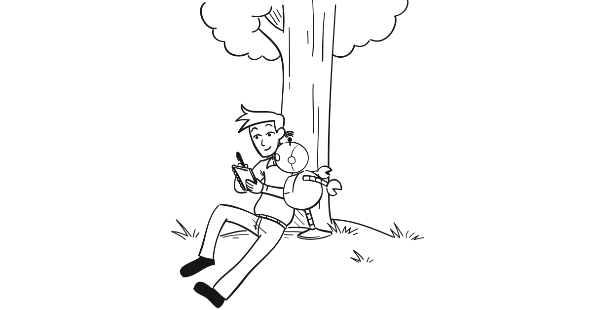

I spent most of my working life in Sales. From individual contributor to executive positions.
And there is no other position in a company, where you get more rejection than in Sales. You have to build a thick skin to be in Sales.
One of the first things you learn when working in Sales, is to not take rejection personally.
You hear tons of "no"s and "not interested". People simply ignoring you. Down to upright rude rejections.
Over the years, one trick I started to use for myself, was to see a "no" as a "delayed yes".
Meaning, when a person tells me "no", in my head it just means "no, not right now". And when you really want to get a "yes" from that person, the game is to figure out what will transform it into a "yes".
So a critical tactic in Sales (albeit not always easy to execute on) is digging into the reasons of the "no".
A rejection can be due to:
a knee jerk reaction
We all raise our shields up as soon as we smell someone trying to sell us something. So in some cases, the "no" comes even before having properly listened to (or understood) what benefits your solution could bring to the recipient (and s/he might need it!).
Asking about the "why" they are rejecting you in those cases is primordial. This can force the person to articulate a reason, which can be built upon (see below).
wrong person
From the outside, it is not always possible to assess if someone/a company is a perfect target audience for your solution - despite what you think ("they do X, surely they must need my solution!").
Engaging someone based on her/his title comes with one's assumption that s/he will need what you are offering. But every company works differently and someone else in the organisation instead could benefit from your solution.
Asking if someone else should be engaged - or if s/he can forward your request to that person - can yield results.
wrong timing
Your outreach might come at the wrong time for the person (buried in an intense period of activity), or for the company (restructuring, financial year end activities, just started using a similar solution, no need at this time, etc..).
Asking if you can reconnect in the future, and when, is key.
If the exchange is happening via email, using simple tools like FollowUpThen is very useful.
wrong messaging
Conveying what your solution does, in a way that resonates with your prospect is the goal. And the grunt work when building a startup, and a sales playbook. Perhaps the person did not get it, the way you think s/he has (or should).
Asking why the recipient does not think it is worth engaging further can unearth valuable tidbits of information.
wrong positioning
"I've been waiting for your call" said no prospect ever. Businesses run without your solution now. Positioning yourself against their status quo, and other similar solutions, in a way where s/he can see how you are uniquely positioned to address their challenges is key.
Again, asking why the recipient does not think it is worth engaging further can unearth valuable tidbits of information. Not only to tweak your positioning, but also, if a pattern emerges, to guide development of your solution to address the positioning issue.
And there other reasons. But bottom line, identify what you can do to change the set of parameters that led to the "no", to make it a "yes".
The "why" question is for me a powerful one, in that game of turning a "no" into a future "yes".
Not every "no" will become a "yes", but if you think about a "no" as a "delayed yes", it will force you to think about what can be done to make it so.
And if at least you can learn something from one "no", to improve your approach with future prospects, that "no" has been valuable to you.
"The greatest teacher failure is" as one wise Jedi master once said.
These last few years, I have been the (co)founder of my own startups. And the rejection ratio tends to go up, the earlier you are in the lifecycle of a company.
At least in an established company, with a mature product or service, and a demonstrated track record of success for it with other clients, you know who to sell to, how, and can lean on (impressive) references to back you up.
As startups are still forming and maturing their product/service, positioning, messaging and credibility overall, the rejection rate is even higher. It's part of the game.
I am actually writing this post at a time where I am getting a lot of "no" myself, which is what you get in the customer discovery phase of every startup, and I am trying to learn from each (well, most). And putting down this trick on paper is helping me remind myself, once again, that "a no is just a delayed yes".
Hope it helps someone else too!